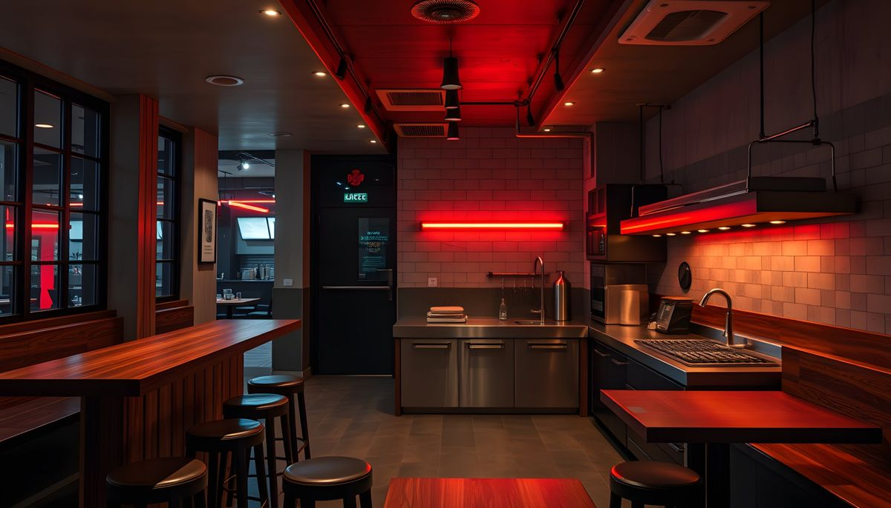
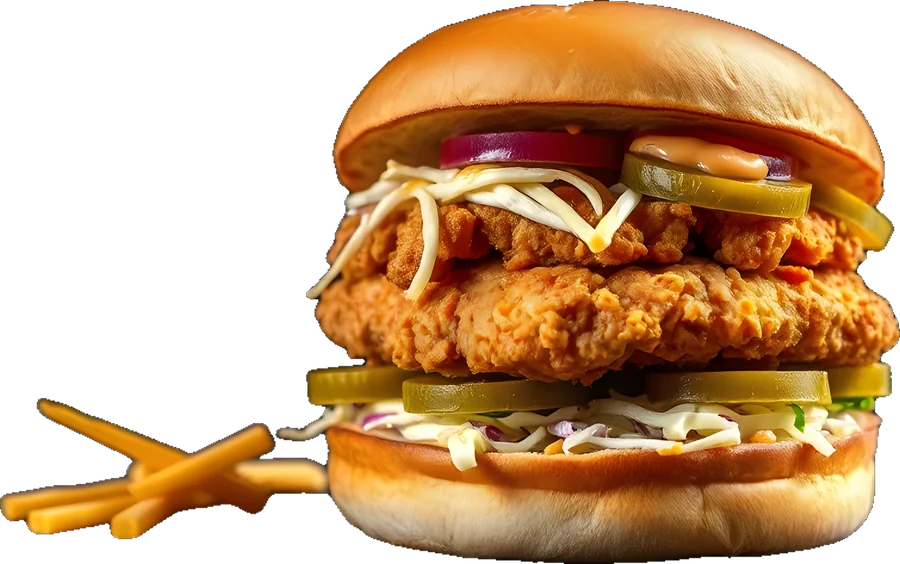

Acil durum? Burger.
Etli, tavuklu, balık ve vejeteryan burger; burrito, taco ve glutensiz seçenekler. Siteler'de, Havuzlu Köşk'ün yanında, her gün 11:00-23:00.
 Temsilî görsel
Temsilî görselNe canın istiyor?
Başlıklar dijital menünüzden alındı. Glutensiz arayan biri tek dokunuşla yalnız kendi yiyebileceklerini görür; yayında her başlığın altında ürünleriniz ve güncel fiyatlarınız durur.



Denizli'de glutensiz burger arayan sizi bulsun.
Glutensiz beslenen biri "glutensiz burger Denizli" diye arar. Bu sayfa o aramaya cevap verir: ne yiyebileceğini, nasıl hazırlandığını ve nereden sipariş vereceğini tek yerde görür.
Glutensiz ürünler ayrı işaretli. Menüde tek dokunuşla süzülür.
Hazırlık notu sizden. Glutensiz ekmek, ayrı ızgara ya da tezgâh gibi uyguladığınız ne varsa kendi cümlenizle yazılır.
Siparişte hatırlatma. Sipariş notuna "glutensiz" otomatik eklenir, mutfağa doğru gider.
Aramadan önce hazırla.
Ne istediğinizi seçin; sipariş notu hazır olur. Aradığınızda okumanız yeterli.
Yol tarifi